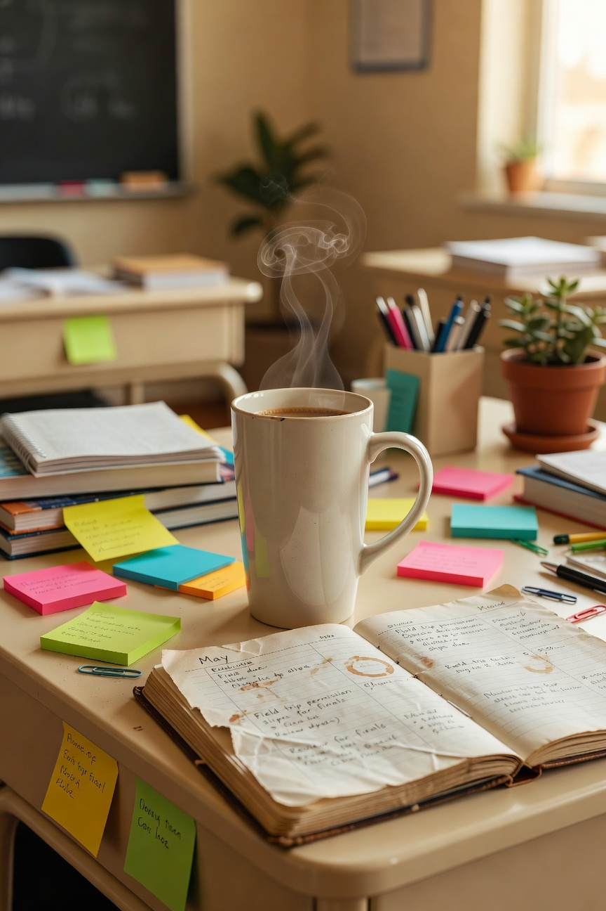
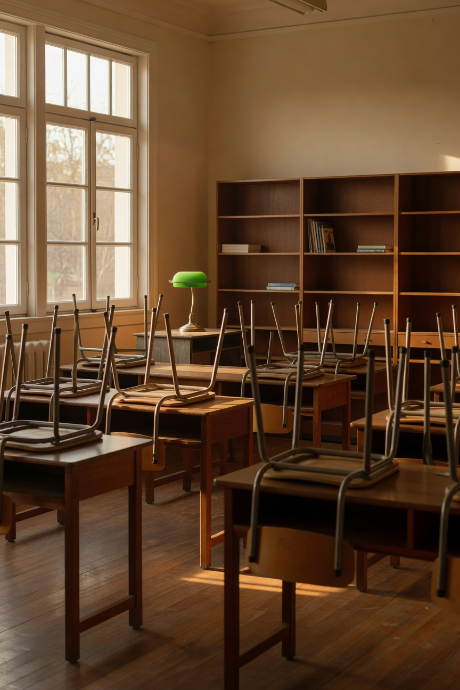

May is a feeling. If you have never worked in a school, it is hard to fully explain -- it is the finish line and the last mile at the same time. Every teacher I know is simultaneously counting down the days and trying to hold everything together until they get there. It is a special kind of exhausted. It is also, if you love what you do, kind of wonderful.
Here is what the last stretch of the year actually looks like from inside a classroom.
What the Kids Are Like in May
Done. They are done. And honestly I understand it completely. They have been at this for nine months. They have grown and learned and pushed through hard things. The fact that they show up every day in May and do the work is something I genuinely respect about them. I tell them that. I think it matters that they hear it.
The energy in a classroom in May is different than any other month. Looser. More personal. We know each other by now in a way we did not in September. Some of my best teaching conversations happen in May, when everyone is tired enough to be honest.
What I Am Like in May

Also done. But the good kind of done -- the kind that comes from having given something real effort for a sustained period and being able to see what it produced. I am tired and proud at the same time and that is a genuinely good feeling.
I maintain the coffee situation carefully through May. This is non-negotiable. The end of year paperwork is substantial and the coffee must be excellent.
Student Appreciation
Every year I do something small for my students at the end of the year. Nothing elaborate -- something that says I see you and this year mattered. A small treat, a note when I can manage it. This year especially it felt important. Some of these kids had a hard year and they showed up anyway. That deserves acknowledgment.
The Reset Begins
Before I leave my classroom for the summer I do a version of the deep clean and assess that I talked about in my fall classroom post. What worked this year. What did not. What needs replacing. What I want to do differently in August. This list goes into my notes app and I add to it all summer so that by the time August comes I know exactly where I am starting.
What Happens After the Last Day

I close my classroom door for the last time, walk to my car, and sit there for a minute. Every year. Just to mark it. Then I go home, and for approximately 48 hours I do absolutely nothing school-related. Then I start thinking about next year, because I cannot help it, and I have stopped pretending otherwise.
To every teacher in the final stretch: you are almost there. Rest this summer. You have genuinely earned it.
-- Christin Marie